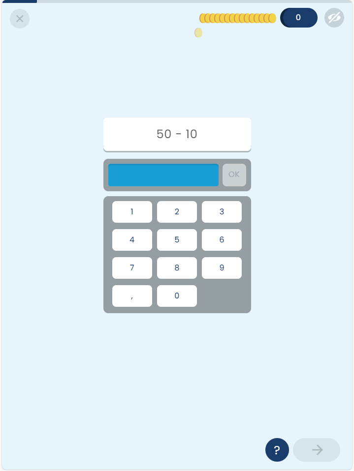

LLMs can estimate item difficulty with moderate-to-strong correlation to empirical data, with pairwise comparison outperforming absolute judgement, and token probabilities plus few-shot prompting closing the gap.
本文系统性地探索了使用现成的大型语言模型（LLM）作为专家来评估题目难度的可行性。研究发现，LLM的难度估计与基于实证数据的项目反应理论（IRT）难度值具有中等到强的正相关，其中成对比较方法优于绝对判断，而使用token概率和少样本提示能进一步缩小差距。
Deep Note — llm-item-difficulty
0) Metadata
- Title: Estimating Item Difficulty with Large Language Models as Experts
- Alias: llm-item-difficulty
- Authors: Diana Kolesnikova, Kirill Fedyanin, Abe D. Hofman, Matthieu J. S. Brinkhuis, Maria Bolsinova
- arXiv ID: 2605.18562
- Published:
- Links:
- Abs: https://arxiv.org/abs/2605.18562
- HTML: https://arxiv.org/html/2605.18562v1
- PDF: https://arxiv.org/pdf/2605.18562
- Tags: item-difficulty, llm-as-judge, educational-assessment, adaptive-learning, prompt-engineering
- Domains: system_safety
- Rating: 4/5 (base 1 + quality 2 + observation 1)
1) Why-read
LLMs can estimate item difficulty with moderate-to-strong correlation to empirical data, with pairwise comparison outperforming absolute judgement, and token probabilities plus few-shot prompting closing the gap.
2) CRGP
C — Context
Accurate item difficulty estimates are crucial for adaptive learning and valid assessment, but new items lack response data. Traditional methods like pretesting and expert judgement are costly and slow, while ML requires large labeled datasets. LLMs have been explored for simulating student responses but not systematically for emulating expert difficulty raters.
R — Related work
- Human expert difficulty estimation shows mixed accuracy (correlations r ≈ .0 to .9) depending on design and aggregation.
- Pairwise comparison often claimed superior to absolute judgement in human studies, but evidence is inconclusive.
- LLMs used to generate synthetic student responses, but often yield unrealistic ability distributions or require fine-tuning on response data.
- Supervised ML models for difficulty estimation require large labeled datasets, limiting cold-start applicability.
G — Gap
Previous work on LLMs for item calibration is limited, with no systematic comparison of elicitation procedures (judgement format, decision type, prompting strategy) for difficulty estimation. The effectiveness of off-the-shelf LLMs as expert raters without response data or fine-tuning remains unexplored.
P — Proposal
The study evaluates three off-the-shelf LLMs (GPT-4, etc.) as difficulty raters for 60 items per domain across six primary-school math domains, using a full factorial design crossing judgement format (absolute vs pairwise), decision type (hard vs token-probability-based), and prompting (zero-shot vs few-shot). LLM-derived difficulty estimates are compared to empirical IRT-based difficulties via Spearman rank correlations.
---
4) Experiments
Main results
Across domains, LLM-based estimates showed moderate to strong positive Spearman correlations (e.g., up to ρ ≈ 0.85 for simpler arithmetic tasks). Pairwise comparison consistently outperformed absolute judgement (e.g., ρ ≈ 0.75 vs 0.55 in zero-shot hard-decision settings). With token probabilities and few-shot examples, absolute judgement achieved ρ ≈ 0.70-0.80, approaching pairwise performance.
Ablation
Pairwise comparison outperformed absolute judgement in all zero-shot hard-decision conditions (e.g., ρ ≈ 0.75 vs 0.55). Adding token probabilities improved absolute judgement by ~0.15-0.20 in Spearman ρ. Few-shot prompting added ~0.10-0.15 over zero-shot for absolute judgement with token probabilities.
Limitations
Only primary-school math domains were tested; generalizability to other subjects or item types is unknown. LLM estimates may be biased by training data exposure to similar items. The study did not compare LLM performance directly to human experts under identical conditions.
5) Why it matters
- Offers a cheap, fast alternative to pretesting for initial item calibration in adaptive learning systems, especially for automated item generation workflows.
- Provides practical guidance on prompt configuration (pairwise vs absolute, token probabilities, few-shot) to maximize alignment with empirical difficulty.
- Highlights that LLMs can approach the upper bound of human expert accuracy for simpler domains, reducing reliance on costly expert panels.
- Systematic comparison of design choices (judgement format, decision type, prompting) provides a template for future LLM-as-judge studies in educational measurement.
6) Next steps
- [ ] Test the best-performing configurations (pairwise with token probabilities, few-shot absolute with token probabilities) on non-math domains (e.g., reading comprehension, science).
- [ ] Compare LLM difficulty estimates directly to human expert estimates on the same items to quantify relative performance.
- [ ] Investigate domain-specific calibration: why simpler arithmetic tasks yield higher correlations than more complex domains.
- [ ] Explore ensemble methods combining multiple LLMs or LLM outputs with small amounts of response data for hybrid calibration.
7) Scoring
4/5 = base 1 + quality 2 + observation 1
利用大型语言模型作为专家评估题目难度
主要结论 - LLM能够以中等到强的相关性估计题目难度，为缺乏响应数据的新题目提供了一种快速、低成本的校准方案。 - 成对比较法在零样本硬决策设置下始终优于绝对判断法，相关系数可达0.75 vs 0.55。 - 使用token概率和少样本提示能显著提升绝对判断法的表现，使其接近成对比较法的效果。 - 在较简单的算术领域，LLM的估计精度可接近人类专家的上限。
1) 阅读理由
核心主张：LLM可作为有效的题目难度评估专家；关键发现：成对比较法优于绝对判断，且token概率与少样本提示可弥补差距。
2) CRGP（背景 / 相关工作 / 差距 / 方案）
背景：准确的题目难度估计对于自适应学习和有效评估至关重要，但新题目缺乏响应数据。传统方法如预测试和专家判断成本高、速度慢，而机器学习需要大量标注数据。已有研究探索了LLM模拟学生响应，但尚未系统性地将其用于模拟专家难度评分者。
相关工作：人类专家难度估计的准确性不一（相关系数r约0.0到0.9），取决于设计和聚合方式；成对比较法在人类研究中常被认为优于绝对判断，但证据不充分；LLM被用于生成合成学生响应，但常产生不现实的能力分布或需要基于响应数据进行微调；监督式机器学习模型需要大量标注数据，限制了冷启动场景的应用。
差距：先前关于LLM用于题目校准的研究有限，缺乏对评估流程（判断格式、决策类型、提示策略）的系统比较。现成LLM作为无需响应数据或微调的专家评分者的有效性尚未被探索。
提议：本研究评估了三种现成LLM（如GPT-4等）作为难度评分者，涉及六个小学数学领域的60道题目，采用全因子设计，交叉比较判断格式（绝对 vs 成对）、决策类型（硬决策 vs 基于token概率）和提示方式（零样本 vs 少样本）。LLM得出的难度估计与基于IRT的经验难度通过Spearman秩相关进行比较。
3) 实验
主要结果：在各个领域中，基于LLM的估计与经验难度之间表现出中等到强的正Spearman相关性（例如，在简单算术任务中相关系数ρ高达约0.85）。成对比较法始终优于绝对判断法（例如，在零样本硬决策设置下，ρ约为0.75 vs 0.55）。使用token概率和少样本示例后，绝对判断法的相关系数达到约0.70-0.80，接近成对比较法的表现。
消融实验
消融实验发现：在所有零样本硬决策条件下，成对比较法优于绝对判断法（例如ρ≈0.75 vs 0.55）。加入token概率使绝对判断法的Spearman ρ提升了约0.15-0.20。在绝对判断法结合token概率的基础上，使用少样本提示比零样本额外提升了约0.10-0.15。
局限性
仅测试了小学数学领域，对其他学科或题型（如阅读理解、科学）的泛化能力未知。LLM的估计可能因训练数据中接触过类似题目而产生偏差。本研究未在相同条件下将LLM的表现与人类专家进行直接比较。
4) 重要性
- 为自适应学习系统中的初始题目校准提供了一种廉价、快速的替代方案，尤其适用于自动化题目生成流程。
- 提供了关于提示配置（成对 vs 绝对、token概率、少样本）的实用指导，以最大化与经验难度的一致性。
- 表明在较简单领域中，LLM的精度可接近人类专家的上限，从而减少对昂贵专家小组的依赖。
- 对设计选择（判断格式、决策类型、提示方式）的系统比较为未来教育测量中LLM作为评判者的研究提供了模板。
5) 下一步
- [ ] 在非数学领域（如阅读理解、科学）测试表现最佳的配置（成对比较结合token概率、少样本绝对判断结合token概率）。
- [ ] 将LLM的难度估计与同一题目上的人类专家估计进行直接比较，以量化相对性能。
- [ ] 探究领域特定的校准差异：为何简单算术任务的相关性高于更复杂的领域。
- [ ] 探索集成方法，结合多个LLM或LLM输出与少量响应数据进行混合校准。
